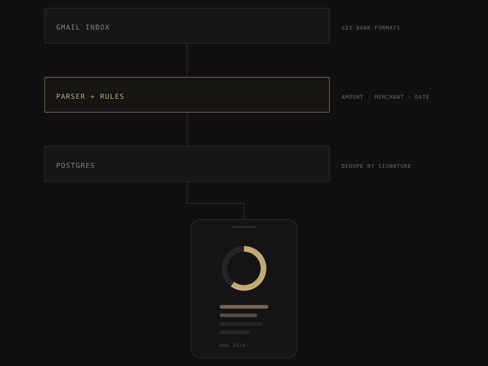

Trackr
Two things I kept losing track of: what I'd spent, and where my parcels were. Trackr handles both from one app.
Bank notification emails arrive in six different formats. A scheduled job reads them over the Gmail API, pulls out the amount, merchant and date, converts foreign spend to SGD, and drops anything it has already seen.
- Filing a transaction can write a rule for that merchant. Set it once and every later transaction from the same name lands in the right category on its own, which is what makes the recurring ones bearable.
- Rules live in Postgres and match on word boundaries. A merchant that fits two categories stays uncategorised rather than being guessed at, and the rules are listed and removable from inside the app.
- Expo app with hand-drawn donut charts, month-by-month navigation, batch recategorising, and swipe-to-delete that keeps a working trash.